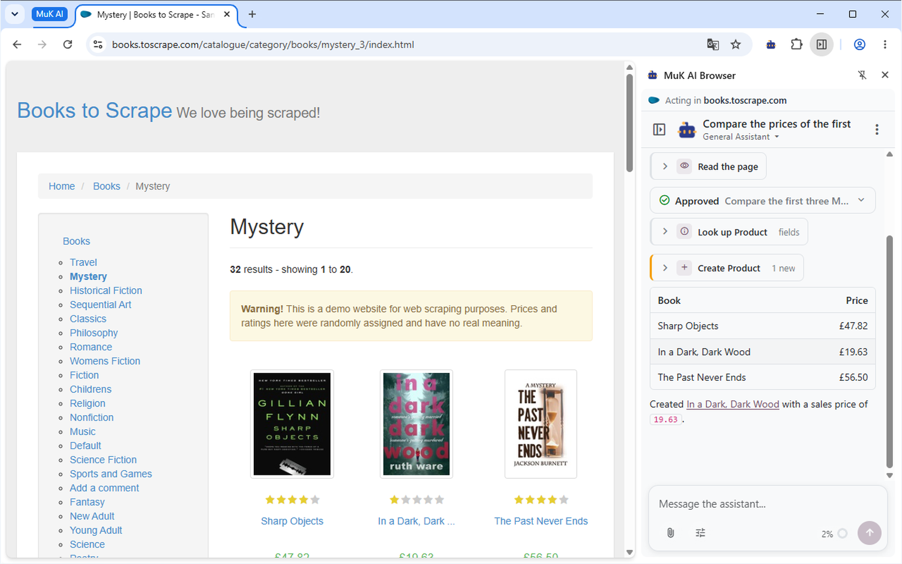
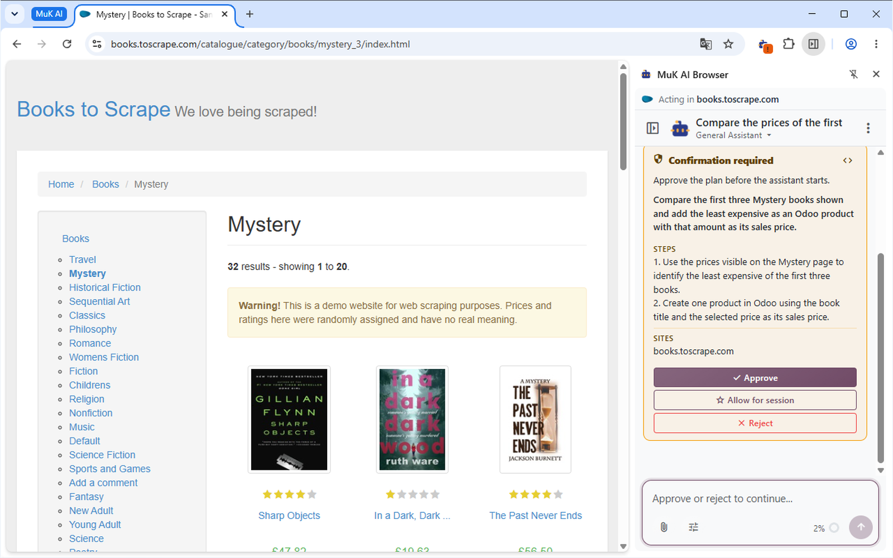
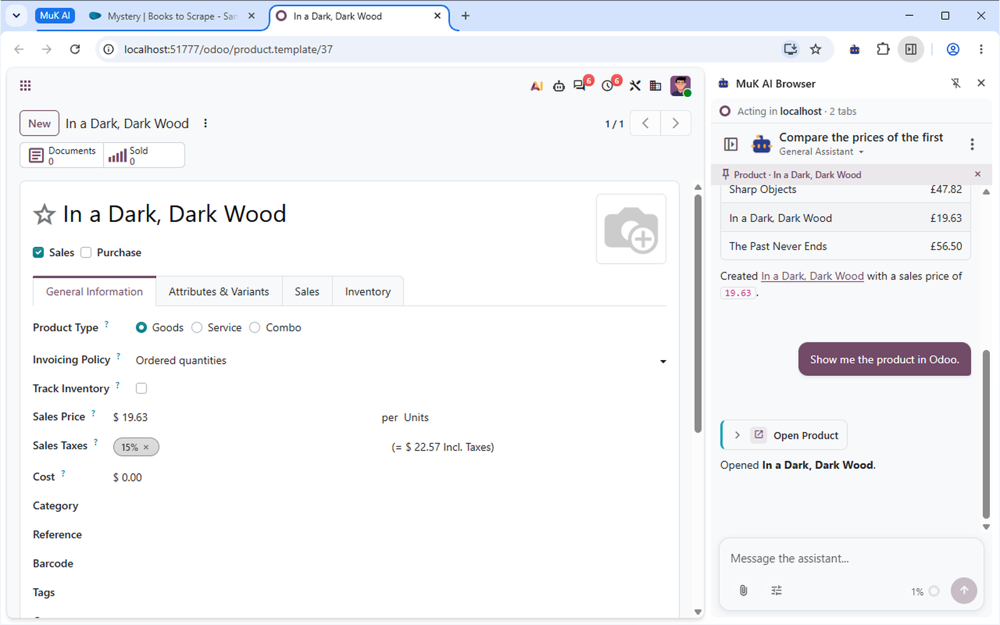
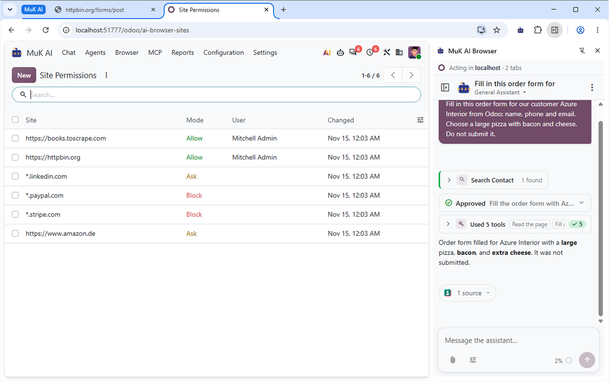
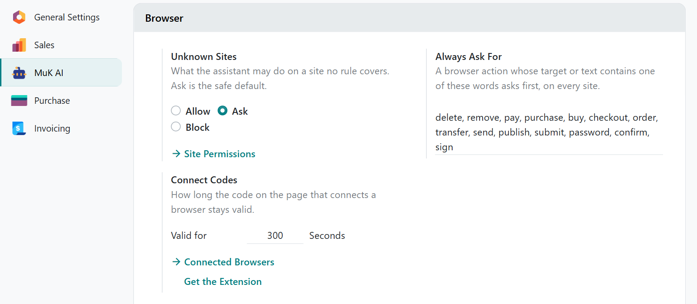

The MuK AI chat in Chrome's side panel reads the pages you work on, clicks, types and fills forms, and brings what it finds into Odoo. The agent, its rules, its approvals and its log stay in your Odoo.
It reads the page, clicks, types, fills forms and opens links, in a tab group named MuK AI that you can see.
A price in a supplier's shop becomes a product, and an Odoo contact fills the order form on a website.
Each site is allowed, asked about or blocked. Form submits and words like pay or delete always ask first.

The MuK AI Browser extension shows your Odoo's own chat in Chrome's side panel, with the agents, tools and approvals you set up there. Odoo decides every step; the extension only carries it out.
The same chat as inside Odoo, beside any web page. The bar above it names the site the agent acts on.
It reads the page, finds elements, clicks, types, fills whole forms, picks options, scrolls and takes screenshots.
It opens links and search results in a group named MuK AI and closes only the tabs it opened. Drag a tab in to hand it over.
It looks up and creates records with its Odoo tools, and opens the record it made in a tab next to the website.
A bar above the chat names the company in Odoo behind the site you look at, opens it, or offers to create it.
It saves a PDF from the web onto an Odoo record, and puts an Odoo file into a site's upload after you approve.
Rules for one user or for everyone, and a default for every site without one. A block for everyone wins.
Each paired browser gets a key that only works for the browser, listed with its last use and disconnected in one click.
For a task of several steps the agent proposes a plan: what it will do, step by step, and the sites it needs. Approve it, and it acts on those sites without asking at each step. A site outside the plan asks again.
Reading and navigating never ask. Clicking, typing and filling ask on a site set to ask, outside an approved plan, on a form submit, and whenever a step reads like one of the words that always ask.


The agent keeps its Odoo tools in the same chat. It looks up a contact, creates a product from a supplier's page, and opens the record it made in a tab of the MuK AI group, while the chat stays in the side panel.
Your own Odoo always counts as allowed, so the agent moves between the website and the record without a rule for it.
Each site is allowed, asked about or blocked, for one user or for everyone, as an exact address or a pattern such as *.example.com. A block for everyone wins over any user rule.
Allow a site from the side panel and the rule shows up in the list. Every step the agent takes is kept in the chat in Odoo.
It never types into a password, payment card or one-time code field, and an upload or a form submit runs only after you approve it.


Install the extension, enter your Odoo address in its options and click Connect. Log in to Odoo in the tab that opens; it pairs the browser and closes itself.
The settings hold what happens on a site without a rule and how long a connect code stays valid, with links to the site rules and the extension.
What you get for free, and what has to be paid work.
Issues and merge requests are welcome on the public repository. They are read — but no response time is promised.
An agent set up for your suppliers' websites, or a fix on a deadline, is paid work — quoted up front. Write to sale@mukit.at.
LGPL-3. Use it, change it, ship it inside your own work — no licence key, no database count.
Modules written for your process, on your Odoo version.
Odoo joined up with the systems you already run.
Hosting, deployment and upgrades you do not have to watch.
Your team taught the parts of Odoo they actually use.
An agreement, so an answer does not depend on who is free.
Odoo.sh or on-premise, Community or Enterprise, MuK AI with a provider set up, and the MuK AI Browser extension in Chrome 116 or newer, or in Microsoft Edge.
Enter the Odoo address in the extension's options and click Connect. Defaults under MuK AI › Settings › Extensions › Browser, site rules under MuK AI › Configuration › Site Permissions.
Depends on muk_ai and muk_mcp. Install it like any other module, then get the extension from the link in the Browser settings.
Open the side panel on any page and ask. Approve a plan or a step when a card asks, and drag a tab into the MuK AI group to hand it over.
Site rules and connected browsers are records, and an upgrade keeps them, so a paired browser stays paired.
MuK IT GmbH, Vienna. Author and maintainer of the module and of the extension, which is open source under Apache-2.0.
Tell us the sites and the steps, and we will tell you whether it needs a rule, an agent or a module of its own. MuK IT — Austrian Odoo partner, Vienna.